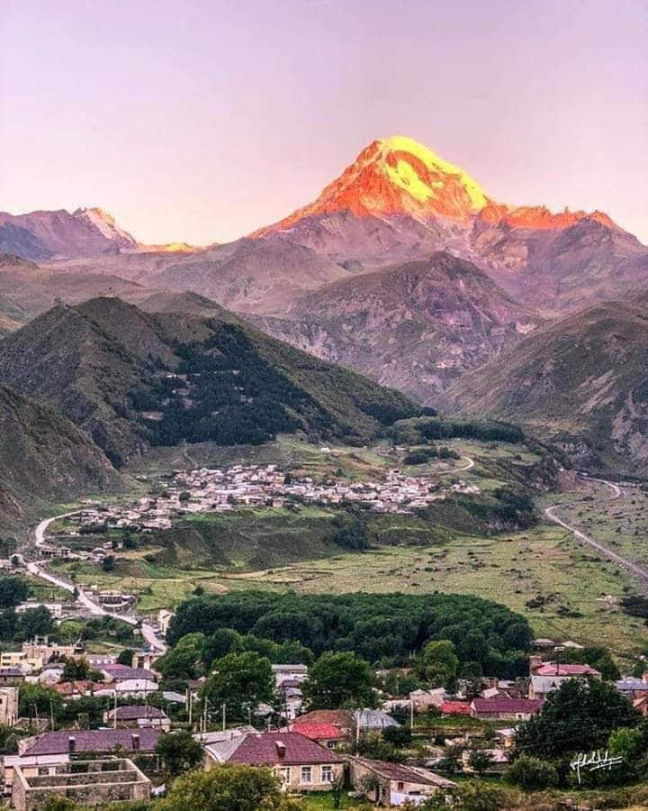

הרים ונופיםהדרך הצבאית וגודאורי
עולים אל הרי הקווקז בדרך נופית העוברת לצד אגמים, מנזרים ונהרות. בדרך למונומנט החברות עוצרים בנקודות תצפית פנורמיות.
מה מחכה לנו בדרך?
- נופי הדרך הצבאית וביקור באנאנורי ובג׳ווארי.
- אגם ז׳ינוולי, פסנאורי ועצירות בנקודות תצפית לאורך הדרך.
- גודאורי ומונומנט החברות.
- אפשרות לטיולי טרקטורונים ולמצנחי רחיפה; בקיץ אפשר לשלב גם רפטינג, בהתאם לתנאים ובתיאום מראש.
- עצירה לארוחת צהריים או ערב בסגנון מקומי בדרך חזרה.
אפשר להגיע לקזבגי (כ־150 ק״מ) בתיאום מראש או אם מתכננים ללון שם. מסלול החורף הרגיל מגיע עד למונומנט החברות.